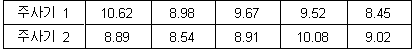

기술 통계량(Descriptive Statistics)의 산출 Stat> Basic Statistics > Display Descriptive Statistics 1. 사용 방법 (데이터 : DStat01.mtw) 두 개의 주사기로 화학 약품을 병 속에 주입하는 공정에서 주사기별로 주입량의 평균과 산포가 얼마나 되는지 확인하기 위해 각 주사기별로 약품이 충전된 병을 5개씩 샘플링하여 데이터를 수집하였다. 먼저, 수집된 데이터를 이용하여 여러 가지 기술 통계량의 값을 구해 보기로 하였다. |
|  |
| 1.1 데이터의 입력 Calc> Column Statistics와 같은 방법으로 데이터를 입력한다 1.2 MINITAB의 실행 ① Stat> Basic Statistics > Display Descriptive Statistics |
 |
| ② Variables난에 데이터가 들어 있는 Worksheet의 Column들을 입력한다.
데이터가 Worksheet의 한 Column에 모두 들어 있을 경우에는 Variables난에 데이터가 들어 있는 Worksheet의 Column을 입력하고, By Variable난에는 Index가 들어 있는 Worksheet의 Column을 입력한다. |
 |
| ③ OK를 클릭한다. Session 창에 나타난 결과 |
 |
|
|